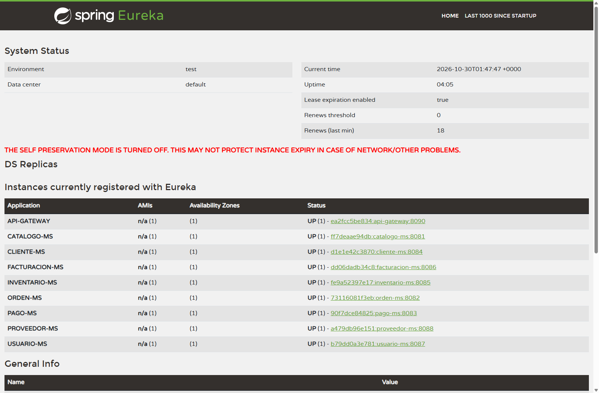
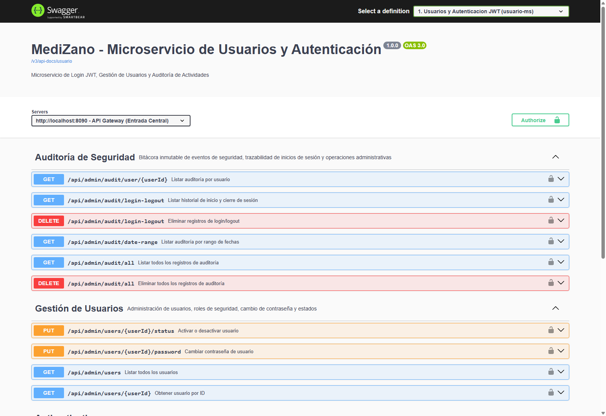
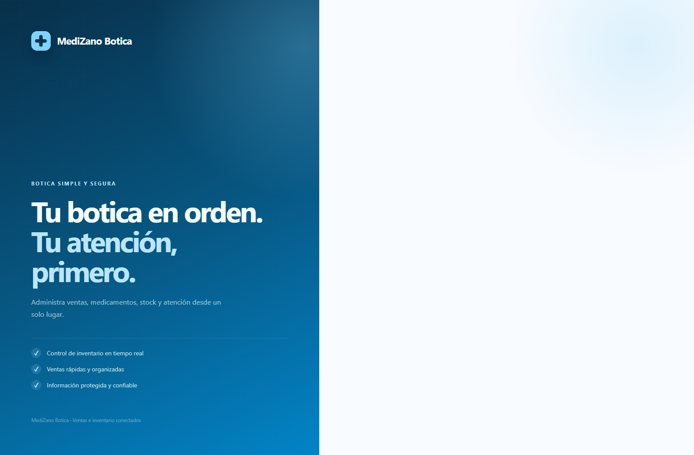

S06 - Comunicación Síncrona Resiliente (OpenFeign + Resilience4j Circuit Breaker)¶
Sesión S06 · Desarrollo de Aplicaciones Distribuidas (UPeU)
Componente Principal:services/medizano-orden-ms(Puerto:8082) $\leftrightarrow$catalogo-ms,cliente-ms,inventario-ms,facturacion-ms
Responsable: Kenyi Calsin (Microservicio Transaccional de Órdenes)
1. Propósito Arquitectónico y Desafío de la Sincronía¶
En una plataforma de punto de venta (POS) farmacéutico, la creación de una orden de venta requiere validar información crítica de forma síncrona antes de confirmar la compra:
- Precios e Identificación: Consultar
catalogo-mspara obtener el precio unitario vigente del producto. - Directorio de Clientes: Consultar
cliente-mspara validar el documento de identidad o RUC/DNI. - Reserva Inmediata de Lote: Solicitar a
inventario-msel descuento de stock bajo el algoritmo FEFO (First Expired, First Out). - Comprobante de Pago: Enviar los detalles calculados a
facturacion-mspara generar la factura con el 18% de IGV (SUNAT).
El Peligro del Acoplamiento Temporal y Falla en Cascada¶
Las llamadas HTTP tradicionales síncronas generan acoplamiento temporal. Si catalogo-ms o inventario-ms se tornan lentos (latencia de 10 a 30 segundos) o caen por saturación:
- Cada petición entrante a
orden-msretiene un hilo del pool del servidor (Tomcat). - En pocos segundos, los hilos de
orden-msse agotan por completo esperando respuestas remotas. orden-mscolapsa, bloqueando a los cajeros y botando el sistema POS entero (falla en cascada).
flowchart LR
A[Cajero POS] -->|Crea Venta| B[orden-ms :8082]
B -->|Feign Call| C{catalogo-ms :8081}
C -->|Normal| D[Respuesta < 50ms]
C -.->|Caído / Lento| E[Bloqueo de Hilos]
E -.->|Sin Resiliencia| F[Colapso en Cascada de orden-ms]
E -->|Con Circuit Breaker| G[Fallback Inmediato 0ms]Para mitigar este riesgo de disponibilidad, MediZano implementa:
- Spring Cloud OpenFeign: Cliente declarativo orientado a interfaces que elimina código repetitivo (
boilerplate) y se integra de forma transparente con Eureka y Spring Cloud LoadBalancer. - Resilience4j Circuit Breaker: Monitorea la tasa de fallos en tiempo real mediante una ventana deslizante. Si los fallos superan el 50%, el circuito se abre y desvía peticiones al método Fallback en milisegundos.
- Resilience4j TimeLimiter: Interrumpe cualquier llamada remota que exceda los 2000 ms (2 segundos).
- Token Interceptor de Seguridad: Inyección automática de cabeceras de autorización mutua mediante
InternalFeignConfig.
2. Clientes OpenFeign Implementados en orden-ms¶
El microservicio orden-ms define interfaces desacopladas para cada servicio colaborador:
| Cliente Feign | Microservicio Destino | Endpoint Invocado | Propósito Transaccional |
|---|---|---|---|
CatalogoClient |
catalogo-ms (:8081) |
GET /api/v1/productos/{id} |
Valida código, nombre y precio unitario de venta |
ClienteClient |
cliente-ms (:8084) |
GET /api/v1/clientes/{id} |
Resuelve nombre, documento fiscal y correo del cliente |
InventarioClient |
inventario-ms (:8085) |
POST /api/v1/inventario/descontar-venta |
Ejecuta el descuento de existencias por lote |
FacturacionClient |
facturacion-ms (:8086) |
POST /api/v1/facturacion/generar |
Emite comprobante de pago con desglose tributario |
3. Evidencias del Navegador: Servicios y Plataforma en Vivo¶
A continuación se presentan las capturas reales obtenidas desde el navegador web conectado a la infraestructura de MediZano:
3.1. Descubrimiento Dinámico de Microservicios en Eureka Server¶
Eureka mantiene en tiempo real el registro de los microservicios síncronos involucrados en la sesión (ORDEN-MS, CATALOGO-MS, CLIENTE-MS, INVENTARIO-MS, FACTURACION-MS):

3.2. Contratos OpenAPI Unificados en el API Gateway (Swagger UI)¶
Swagger UI perimetral documenta los contratos de datos y rutas expuestas hacia el exterior:

3.3. Interfaz de Usuario del Sistema POS (Frontend Web)¶
El Frontend Angular interactúa exclusivamente con el API Gateway, iniciando la orquestación síncrona:

4. Código Fuente Real de los Clientes y Filtro de Seguridad¶
Definición de CatalogoClient.java¶
package com.medizano.orden.client;
import lombok.Data;
import org.springframework.cloud.openfeign.FeignClient;
import org.springframework.web.bind.annotation.GetMapping;
import org.springframework.web.bind.annotation.PathVariable;
import java.math.BigDecimal;
@FeignClient(name = "catalogo-ms")
public interface CatalogoClient {
@GetMapping("/api/v1/productos/{id}")
ProductoResponse obtenerProductoPorId(@PathVariable("id") Long id);
@Data
class ProductoResponse {
private Long id;
private String nombre;
private String codigo;
private BigDecimal precioVenta;
private Boolean estado;
}
}
Seguridad Inter-servicios (InternalFeignConfig.java)¶
Para evitar que clientes no autorizados invoquen endpoints internos de microservicios haciéndose pasar por orden-ms, se implementa un RequestInterceptor que inyecta automáticamente un token criptográfico en cada llamada saliente:
package com.medizano.orden.config;
import feign.RequestInterceptor;
import org.springframework.beans.factory.annotation.Value;
import org.springframework.context.annotation.Bean;
import org.springframework.context.annotation.Configuration;
@Configuration
public class InternalFeignConfig {
@Bean
RequestInterceptor internalServiceTokenInterceptor(
@Value("${security.internal-service-token}") String token) {
return template -> template.header("X-Internal-Service-Token", token);
}
}
5. Orquestación Síncrona en OrdenService.java¶
El siguiente diagrama de secuencia detalla el flujo síncrono que orquesta OrdenService al registrar una venta desde el Terminal POS:
sequenceDiagram
autonumber
actor Cajero as Cajero POS
participant GW as API Gateway (:8090)
participant ORD as orden-ms (:8082)
participant EUR as Eureka Discovery (:8761)
participant CAT as catalogo-ms (:8081)
participant CLI as cliente-ms (:8084)
participant INV as inventario-ms (:8085)
Cajero->>GW: POST /api/v1/ordenes (Items, ClienteID)
GW->>ORD: Reenvía petición validada
ORD->>EUR: Resuelve dirección de "cliente-ms"
EUR-->>ORD: Instancia disponible (172.18.0.x:8084)
ORD->>CLI: ClienteClient.obtenerClientePorId(id)
CLI-->>ORD: Datos del cliente (DNI, Nombre)
loop Por cada producto del pedido
ORD->>EUR: Resuelve dirección de "catalogo-ms"
EUR-->>ORD: Instancia disponible (172.18.0.x:8081)
ORD->>CAT: CatalogoClient.obtenerProductoPorId(id)
CAT-->>ORD: ProductoResponse (Precio, Nombre)
end
ORD->>ORD: Calcula Subtotal, IGV (18%) y Total
alt Pago Efectivo (CASH)
ORD->>INV: InventarioClient.descontarStockVenta(items)
INV-->>ORD: Stock descontado satisfactoriamente
ORD-->>GW: OrdenDTO (Estado: PAGADA)
else Pago Digital (PayPal)
ORD-->>GW: OrdenDTO (Estado: PENDING - Stock Reservado)
end
GW-->>Cajero: 201 Created (Venta registrada)6. Arquitectura del Circuit Breaker (Resilience4j)¶
El patrón Circuit Breaker actúa como un interruptor eléctrico de seguridad que detecta fallos repetitivos y corta el paso de solicitudes HTTP para proteger tanto al cliente como al servicio remoto.
stateDiagram-v2
[*] --> Cerrado: Inicialización
Cerrado --> Abierto: Tasa de fallos > 50% en 10 llamadas
Abierto --> SemiAbierto: Transcurren 10 segundos (wait-duration)
SemiAbierto --> Cerrado: Las 3 llamadas piloto son exitosas
SemiAbierto --> Abierto: Al menos 1 llamada piloto fallaDetalle de los Estados:¶
- Cerrado (Closed - Saludable):
- El tráfico fluye normalmente hacia el microservicio remoto.
- Se registra el resultado en una ventana deslizante de tipo
COUNT_BASEDde 10 peticiones. -
Si la tasa de llamadas fallidas supera el 50%, el circuito conmuta automáticamente al estado Abierto.
-
Abierto (Open - Cortocircuito Activado):
- Las llamadas entrantes son interceptadas y rechazadas inmediatamente en 0 milisegundos sin esperar timeout.
- Se ejecuta la lógica de contingencia del método Fallback.
-
El circuito permanece bloqueado durante 10,000 ms (10 segundos) para permitir que el servicio caído se recupere.
-
Semi-Abierto (Half-Open - Fase de Evaluación):
- Tras expirar el tiempo de espera, el circuito permite pasar exactamente 3 llamadas piloto.
- Si las 3 llamadas responden correctamente, se asume que el servicio se estabilizó y el circuito vuelve a Cerrado.
- Si alguna de las 3 llamadas falla o expira por timeout, el circuito vuelve inmediatamente al estado Abierto por otros 10 segundos.
7. Configuración de Parámetros en application.yml¶
resilience4j:
circuitbreaker:
instances:
catalogoClient:
sliding-window-type: COUNT_BASED
sliding-window-size: 10
minimum-number-of-calls: 5
failure-rate-threshold: 50.0
wait-duration-in-open-state: 10000ms
permitted-number-of-calls-in-half-open-state: 3
automatic-transition-from-open-to-half-open-enabled: true
inventarioClient:
sliding-window-type: COUNT_BASED
sliding-window-size: 10
minimum-number-of-calls: 5
failure-rate-threshold: 50.0
wait-duration-in-open-state: 10000ms
permitted-number-of-calls-in-half-open-state: 3
timelimiter:
instances:
catalogoClient:
timeout-duration: 2000ms
inventarioClient:
timeout-duration: 2500ms
Justificación de Parámetros Clave:¶
| Parámetro | Valor Configurado | Justificación Técnica para POS |
|---|---|---|
sliding-window-size |
10 |
Evalúa las últimas 10 peticiones para tener una muestra estadística representativa sin retrasar la reacción. |
minimum-number-of-calls |
5 |
Evita falsos positivos; no calcula tasa de fallo hasta haber realizado al menos 5 llamadas. |
failure-rate-threshold |
50.0% |
Si la mitad de las peticiones fallan o superan el timeout, el servicio se considera inestable. |
wait-duration-in-open-state |
10000ms |
Da una ventana de 10 segundos al contenedor caído para reiniciar o desahogar su cola de hilos. |
timeout-duration |
2000ms |
Ningún cajero de farmacia debe esperar más de 2 segundos por una consulta de precio unitario. |
8. Estrategia de Fallback y Degradación Elegante¶
Cuando se activa el Fallback, orden-ms intercepta la excepción CallNotPermittedException o TimeoutException y responde con una estrategia controlada:
flowchart TD
Peticion[Petición: Obtener Precio / Stock] --> CheckCB{¿Circuito Abierto?}
CheckCB -- Sí --> Fallback[Ejecutar Fallback Inmediato]
CheckCB -- No --> Invocar[Invocación HTTP remota con TimeLimiter]
Invocar --> CheckTime{¿Responde en < 2.0s?}
CheckTime -- Sí --> Exito[Retorna Datos Reales]
CheckTime -- No / 500 --> RegistraFallo[Incrementa Tasa de Falla]
RegistraFallo --> Fallback
Fallback --> RespContingencia[Responde Mensaje Amigable al POS sin Error 500]@Component
@Slf4j
public class CatalogoClientFallback implements CatalogoClient {
@Override
public ProductoResponse obtenerProductoPorId(Long id) {
log.warn("[CircuitBreaker] Fallback activado para catalogo-ms en producto ID: {}", id);
// Retorna un DTO de contingencia impidiendo una excepción HTTP 500 descontrolada
ProductoResponse fallback = new ProductoResponse();
fallback.setId(id);
fallback.setNombre("Producto en Mantenimiento Temporal");
fallback.setPrecioVenta(BigDecimal.ZERO);
fallback.setEstado(false);
return fallback;
}
}
9. Procedimiento de Verificación en Vivo¶
Para auditar el comportamiento del Circuit Breaker en la sustentación del proyecto, se ejecutan las siguientes pruebas:
Paso 1: Operación Normal (Circuito Cerrado)¶
# Consultar orden con catalogo-ms saludable
curl -i -X GET http://localhost:8090/api/v1/ordenes \
-H "Authorization: Bearer <TOKEN_VALIDO>"
HTTP/1.1 200 OK en menos de 45 ms.
Paso 2: Simulación de Caída de Servicio Remoto¶
# Pausar el contenedor del catálogo para provocar timeout y fallos de conexión
docker pause medizano-catalogo-ms
Paso 3: Disparo del Circuit Breaker¶
# Ejecutar peticiones consecutivas de creación de orden
for i in {1..6}; do
curl -s -o /dev/null -w "%{http_code} en %{time_total}s\n" \
-X POST http://localhost:8090/api/v1/ordenes \
-H "Content-Type: application/json" \
-d '{"items":[{"productoId":13,"cantidad":2}],"metodoPago":"EFECTIVO"}'
done
Paso 4: Recuperación Automática (Transición a Semi-Abierto y Cerrado)¶
# Reanudar el contenedor de catálogo
docker unpause medizano-catalogo-ms
# Esperar 10 segundos (wait-duration-in-open-state)
sleep 10
# Realizar llamadas piloto
curl -i -X GET http://localhost:8090/api/v1/ordenes
10. Preguntas Clave para el Jurado (Sustentación Técnica)¶
- ¿Por qué eligieron OpenFeign sobre
WebClientoRestTemplate? -
Respuesta: OpenFeign permite una arquitectura puramente declarativa basada en interfaces y anotaciones de Spring MVC. Se integra de manera nativa con Eureka para balanceo de carga automático sin escribir lógica de sockets ni concatenación manual de URLs.
-
¿Cómo evita Resilience4j que una falla en catálogo tumbe el punto de venta?
-
Respuesta: Mediante el aislamiento de fallas (Bulkhead y Circuit Breaker). Si el catálogo cae, las peticiones se cortan de inmediato (0 ms) mediante el Fallback, impidiendo que los hilos de
orden-msse agoten esperando conexiones perdidas. -
¿Por qué la ventana deslizante es de tipo
COUNT_BASEDy noTIME_BASED? -
Respuesta: En un sistema POS, el volumen de transacciones se mide por operaciones de venta concretadas. Una ventana de conteo (10 llamadas) garantiza que el umbral del 50% reaccione ante una ráfaga de fallas independientemente de si ocurren en 5 segundos o en 2 minutos.
-
¿Cómo garantizan que un atacante externo no consuma directamente los endpoints internos vía Feign?
- Respuesta: Con
InternalFeignConfig, cada llamada síncrona adjunta la cabeceraX-Internal-Service-Token. Los microservicios internos validan este token secreto; si una petición llega sin él (o desde fuera del Gateway), es rechazada con un código403 Forbidden.